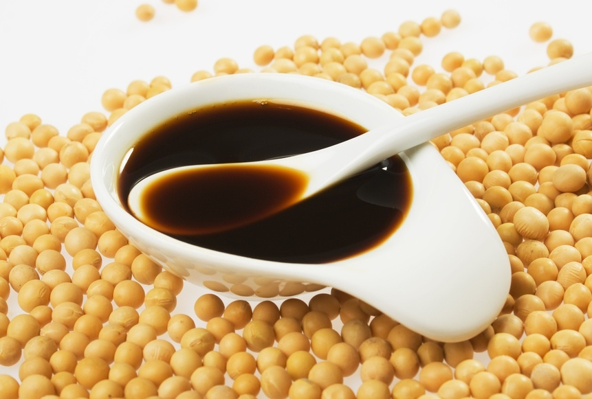

____
Традиционная еда
Рис — Является основным ингредиентом японской кухни и основой питания в Японии. В японском языке слово «гохан» (яп. 御飯, варёный рис), подобно русскому «хлеб», обозначает не только конкретный продукт питания, но и еду вообще.

Морепродукты — Рыба, моллюски, морские животные в японской кухне являются вторым по важности компонентом после риса. Как правило, при приготовлении они подвергаются лишь незначительной термообработке (обжарка, приготовление на пару), а в некоторые блюда (сасими) включаются просто в сыром виде.
Применяются в японской кухне и морские водоросли.
Соя — Соя была принесена в Японию из Китая, она применяется в японской кухне в различных видах, однако практически всегда в глубоко переработанном виде: Соевое молоко, Тофу, Юба, Соевый соус, Соевая паста мисо, Эдамамэ.

Фасоль — Широко используется в супах и как начинка, а паста из фасоли как основной ингредиент для приготовления многих сладостей.
Прочие растения — Находят применение в японской кухне практически все культурные и многие дикие съедобные растения. В частности, широко применяются морковь, огурцы, капуста, салат. Специфические растения — васаби, белый редис дайкон, бамбук, лотос, батат — используются для гарниров и приготовления соусов.
____